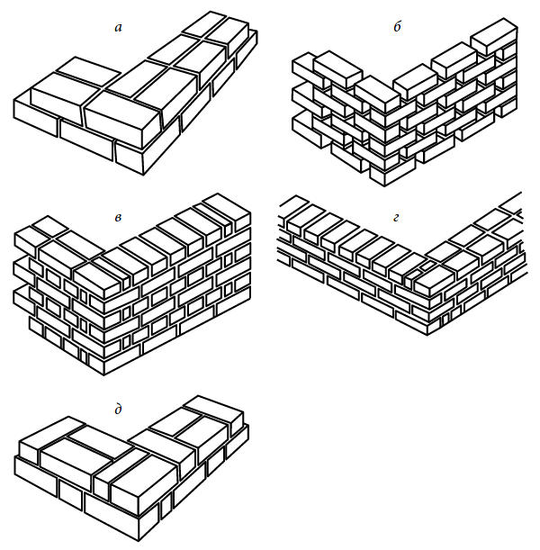
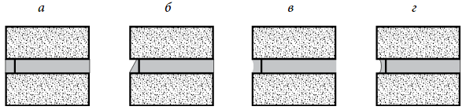

КЛАДКА ПРОЛЬОТУ
Звичайну кладку прольоту виконують вполкирпича (тобто цегла кладуть постіллю вздовж паркану), в одну цеглину (постіллю поперек огорожі), в півтора і два цегли. При цьому кладка навіть в одну цегла витримує удар легкової машини, правда, не фронтальний, а дотичний. Зрозуміло, така стіна повинна бути посилена стовпами.
Слід враховувати, що на паркан буде впливати вітер, якому він повинен успішно протистояти. У разі якщо невисокий паркан (висотою не більше 1 м), на цю обставину можна не звертати уваги. Якщо ж висота забору досягає 2 м, треба враховувати силу вітру в тій чи іншій місцевості.
Підраховано, що стіна товщиною в одну цеглину і висотою трохи більше 2 м здатна успішно протистояти вітру зі швидкістю до 15 м/с, але якщо забір вище, краще споруджувати стіну в півтора цегли. Тоді паркан висотою 2,4 м витримає натиск вітру зі швидкістю навіть 27 м/с, що за загальноприйнятою градації вже відповідає шторму. Стіна товщиною в дві цеглини і висотою 2,5 м здатна витримати ураган з силою вітру до 40 м/с.
Цеглу кладуть, суворо дотримуючись перев'язку, тобто так, щоб вертикальні шви у одному ряду не збігалися з вертикальними швами у сусідніх з ним верхньому і нижньому рядах.
Для прольотів огорожі приймається наступний витрата стандартної цегли: — 153 штуки на 1 м 2 стіни завтовшки у 1,5 цеглини; — 110 штук на 1 м 2 стіни товщиною в 1 цеглу; — 55 штук на 1 м 2 стіни товщиною вполкирпича.
Оптимальна довжина прольоту між стовпами залежить від висоти і товщини стіни: від 2,5 м (якщо кладка в підлогу - цегли та не вище 2 м) до 4-5 м. найпопулярнішими є кладки цегляних парканів зі стінами в пів цегли і в одну цеглину.
Є безліч типів перев'язки кладки, в кожному з яких по-своєму розташовані уступи, шви і відмінний від інших малюнок стіни (рис. 38). Звичайно, візуальне враження відіграє чималу роль, однак основний практичний сенс полягає перев'язки в тому, щоб зв'язати цегла і блоки разом в одну монолітну масу і рівномірно розподілити навантаження по всій довжині стіни.
Ложкова перев'язка — це найбільш поширений тип перев'язки, коли цеглини перекривають один одного на половину своєї довжини. Цеглу кладуть в напрямку довжини в одну чи дві лінії. При кладці стіни вполкирпича для забезпечення перев'язки на початку і наприкінці кожного другого ряду необхідно класти половинку цегли. В стінах в одну цеглину останні цегли укладають поперек двох ліній цегли.
Відкрита, або стільниковий, перев'язка — це декоративна форма ложковой перев'язки. Між кінцями цеглин роблять розриви в чверть або половину цегли, що виглядає дуже привабливо і дозволяє скоротити кількість матеріалу.
Англійська (ланцюгова) перев'язка утворюється чергуванням рядів з точкових і ложкових цеглин таким чином, що вдається уникнути вертикальних швів в центрі стіни. У тычковом ряду для розташування швів уступами використовують неповномірні цеглини. Це найміцніша перев'язка.
Англійська перев'язка садова утворюється шляхом кладки трьох рядів цегли звичайної ложковой перев'язкою, за якими слід один тичковий ряд. Для розташування швів уступами тут також використовують неповномірні цеглини.
Фламандська перев'язка використовується для стін в один цегла і полягає в укладанні точкових і ложкових цегли в один ряд. Для того щоб шви на кутах розташовувалися уступами, необхідно у перемежованих рядах класти неповномірні цеглини, розколоті навпіл в довжину.
 Види перев'язок цегляної кладки: а — ложкова перев'язка; б — відкрита, або стільниковий, перев'язка; в — англійська (ланцюгова) перев'язка; г — англійська садова перев'язка; д — фламандська перев'язка
На початку кладки стіни рекомендується викласти насухо перший ряд цеглин, плануючи їх кількість у рядку. Потім приготувати кладочний розчин (з 1 частини цементу і 4 частин дрібного піску) і викласти цеглини вже на розчин. Розчин під перший ряд кладуть на гідроізоляцію по бетонній основі. Покладіть перший цегла точно по горизонталі. На відстані в 6 цеглин покладіть другий цегла і за допомогою шнура-причалки або правила і спиртового рівня - ня переконайтеся, що обидва цегли знаходяться в одній площині. Повторюйте цю процедуру, поки не дійдете до далекого кінця стіни. Заповніть проміжки між укладеними цеглою. Регулярно перевіряйте горизонтальність і вертикальність кладки — якість першого ряду багато в чому визначає якість всієї стіни.
Якщо в огорожі передбачені опорні стовпи, то їх викладають по ходу зведення стіни, також попередньо розпланувавши цегла. Кути або колони нарощують поетапно, ступенями. За ходу кладки слід постійно перевіряти горизонтальність рядів і вертикальність кутів і стінок.
Щоб повітря на ділянці не застоювався, а рослини біля огорожі не в'янули, в глухому паркані потрібно передбачити отвори. Можна класти цеглини або камені відкритої перев'язкою, а можна вмонтувати в стіну відрізки азбестоцементних труб. Вийде не менш надійно і красиво, але при цьому збережеться сприятливий мікроклімат на ділянці — стіна буде пропускати світло і повітря.
Шви кладки повинні бути акуратними, без пустот, однаковими по товщині. Оптимальна товщина швів — 10 мм. Контролювати рівність швів, а також горизонтальність рядів можна з допомогою рейки-порядовки, на якій зроблені позначки з кроком, рівним висоті цегли плюс товщина шару розчину. Остаточну закладення і формування швів між цеглою (розшивку швів) здійснюють, поки розчин ще вологий.
 Основні типи швів: а — впідрізку; б — зі скосом вниз; в — увігнуті; г — втоплені
Шви впідрізку закладені так, що утворюють одну рівну поверхню з цегляною кладкою. Для їх формування зшкрібають надлишки розчину з допомогою малої кельми (отрезовка), а потім очищують цеглу мішковиною.
Шви зі скосом вниз формують отрезовкой так, щоб у розчині утворилося заглиблення з ухилом вниз у напрямку до поверхні стіни (для кращого стоку дощової води). Вертикальні шви можуть мати скіс наліво або направо, але всі вони повинні бути зроблені у одному напрямку.
Увігнуті шви закладають шляхом загладжування розчину спеціальним расшивочным інструментом, шматком арматурного прута або гумовою трубкою.
Втоплені шви зашпаровують за допомогою дерев'яного або металевого прута. Оскільки погано захищають стіну від води, вони зазвичай застосовуються тільки всередині приміщень. Для гребеня стіни паркану потрібна спеціальна обробка, перешкоджає проникненню дощової води в кладку. Для цього можна використовувати керамічні облицювальні плитки, клінкерні цегла, азбестоцементні покрівельні плити, черепицю, бітумні плитки і навіть дерево. Верх цоколя і стовпів також слід прикрити козирком, який захистить їх від опадів.